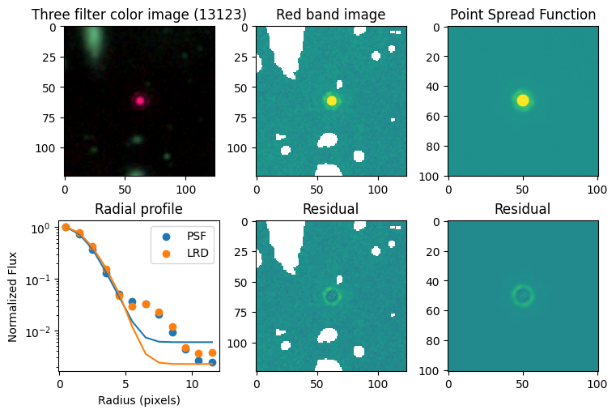
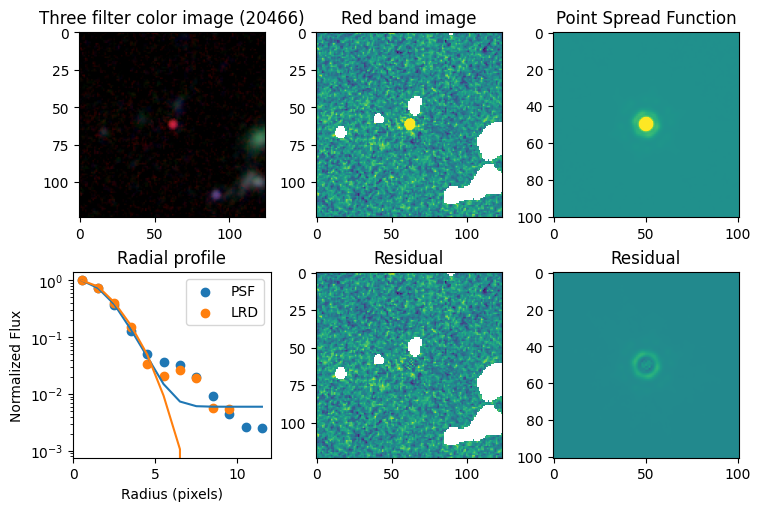
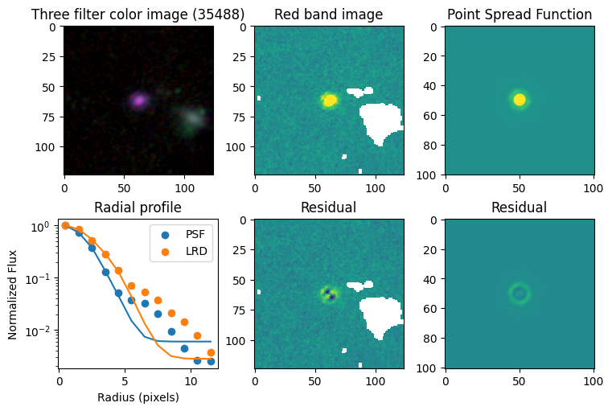
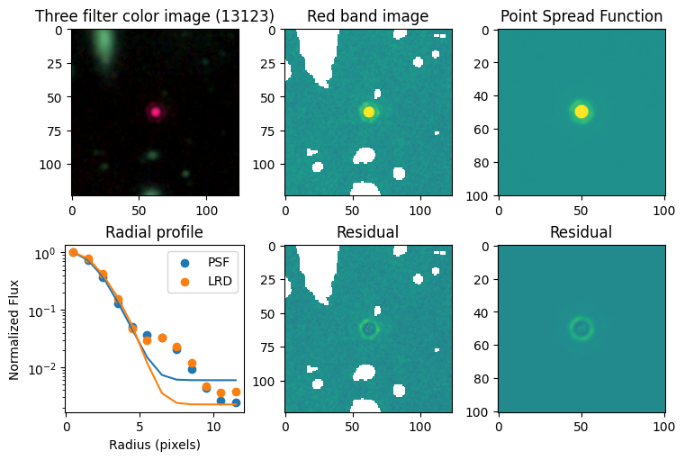
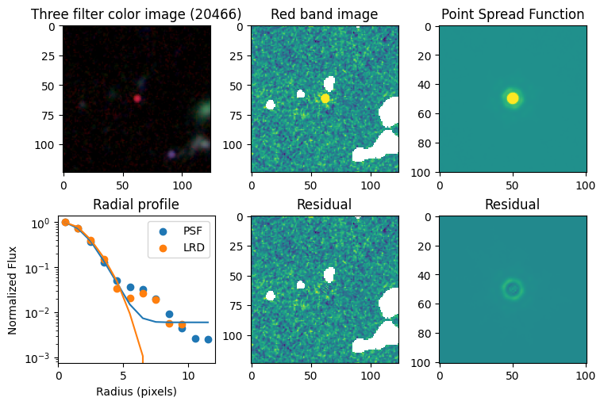
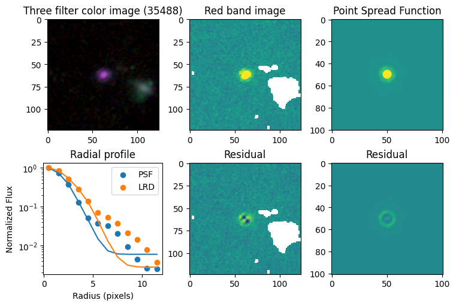
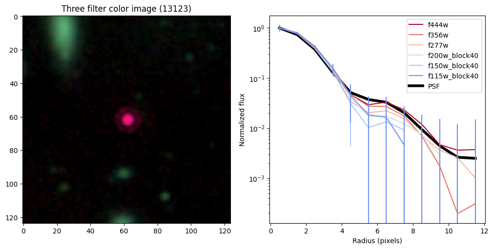
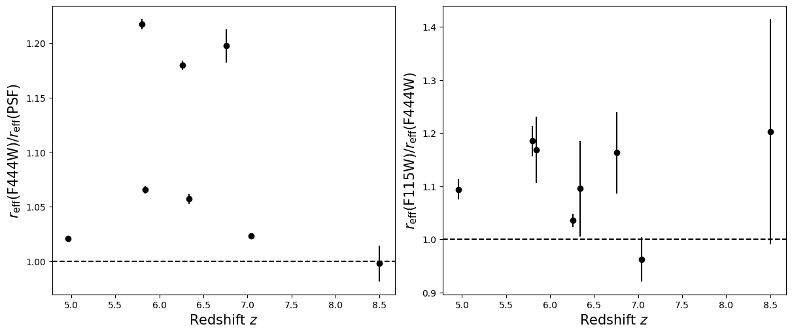

LRD project#
Imports#
import scipy
import numpy as np
import pandas as pd
from astropy import visualization
from matplotlib import pyplot as plt
LRD information#
targets = {
4286 : (3.619202, -30.423270),
13123 : (3.579829, -30.401570),
13821 : (3.620607, -30.399951),
20466 : (3.640409, -30.386437),
23608 : (3.542815, -30.380646),
35488 : (3.578984, -30.362598),
38108 : (3.530009, -30.358013),
41225 : (3.533994, -30.353308),
}
# confirmed broadlines in UNCOVER except 45924, because really bright and breaks these simple tests
# [z, mu, L_Ha, L_bol, F277 – F356]
supplemental = {
4286 : ( 5.84, 1.62, 43.4, 45.4, 1.19),
13123 : ( 7.04, 6.15, 42.7, 45.0, 1.89),
13821 : ( 6.34, 1.59, 43.3, 45.4, 1.40),
20466 : ( 8.50, 1.33, 43.8, 45.8, 0.72),
23608 : ( 5.80, 2.07, 42.3, 44.2, 0.88),
35488 : ( 6.26, 3.38, 42.8, 44.8, 0.99),
38108 : ( 4.96, 1.59, 43.4, 45.3, 0.83),
41225 : ( 6.76, 1.50, 43.5, 45.3, 0.71),
}
bands = ['f480m',
'f460m',
'f444w',
'f430m',
'f410m',
'f360m',
'f356w',
'f335m',
'f300m',
'f277w',
'f250m',
'f210m_block40',
'f200w_block40',
'f182m_block40',
'f162m_block40',
'f150w_block40',
'f140m_block40',
'f115w_block40',
'f090w_block40',
'f070w_block40']
Functions#
def residual(theta, x, y, z, z_err, sumit = False):
sigma, scale, bkg, xmu, ymu = theta
model = gauss2d(x,y,sigma=sigma,scale=scale,bkg=bkg,xmu=xmu,ymu=ymu)
chi = np.power(model - z,2)/z_err**2
if sumit:
return np.nansum(chi)
else:
c = chi.ravel()
return c[np.isfinite(c)]
def gauss2d(x,y,sigma,scale,bkg,xmu=0,ymu=0,unravel=False):
"""
Symmetric 2D point-spread function (PSF)
inputs:
x: np.ndarray, where to evaluate the PSF
y: np.ndarray, where to evaluate the PSF
sigma: float, width of the PDF
scale: float, integrated area under the PSF
bkg: float, background flux level
xmu: float, center of PSF in x
ymu: float, center of PSF in y
outputs:
PSF evalauted at x and y
"""
exponent = (np.power(x-xmu,2) + np.power(y-ymu,2) ) / sigma**2
mod = scale * np.exp(-exponent) / (2*np.pi*sigma**2) + bkg
if unravel:
return mod.ravel()
else:
return mod
def fit_with_func(image, error, first_guess):
x = np.arange(image.shape[0])
y = np.arange(image.shape[1])
X,Y = np.meshgrid(x,y)
out = scipy.optimize.leastsq(residual,
x0 = first_guess,
args = (X,Y,image,error),
full_output = True
)
return out[0], X, Y
def radial_profile(image, error, step = 5, steps = 4):
x = np.arange(image.shape[0])
y = np.arange(image.shape[1])
X,Y = np.meshgrid(x,y)
x0 = image.shape[0]/2
y0 = image.shape[0]/2
R = np.sqrt( np.power(X-x0,2) + np.power(Y-y0,2) )
radii,fluxes,errors,areas = [],[],[],[]
r0 = 0
for i in range(steps):
C = (R<r0+step) & (R>=r0)
radii.append(r0+step/2)
fluxes.append( np.nansum(image[C]) )
errors.append( np.sqrt( np.nansum(np.power(error[C],2) )) )
areas.append( len(C[C]) )
r0 += step
return np.array(radii), np.array(fluxes), np.array(errors), np.array(areas)
def get_circle(r, x0,y0):
theta = np.linspace(0, 2 * np.pi, 100)
return x0 + r * np.sin(theta), y0 + r * np.cos(theta)
def find_half_light_radius(x,y,n=100):
xp = np.linspace(x.min(), x.max(), n)
yp = np.interp(xp,x,y)
ap = [0]
for i in range(1,n):
ap.append( np.trapz(yp[:i], xp[:i]) )
ap = np.array(ap)
ap /= ap[-1]
half = np.interp(0.5, ap, xp)
return xp, yp, ap, half
Compare F444W with the PSF#
for target in targets.keys():
# load images
images = np.load(f'data/{target}/sci.npy')
errors = np.load(f'data/{target}/err.npy')
masks = np.load(f'data/{target}/msk.npy')
psfs = np.load('data/psf.npy')
# place we will put the plots
fig = plt.figure(constrained_layout=True, figsize = (15/2,10/2))
ax_dict = fig.subplot_mosaic(
"""
ABC
DEF
""")
# show color image
rgb = visualization.make_lupton_rgb(images[2], images[-11], images[-14],
stretch=0.2)
ax_dict['A'].imshow(rgb)
ax_dict['A'].set_title(f'Three filter color image ({target})')
# mask out nearby sources
images[masks] = np.nan
errors[masks] = np.nan
# show reddest image
ax_dict['B'].imshow(images[2], vmin = -np.nanmax(images[2]) / 10, vmax= np.nanmax(images[2]) / 10)
ax_dict['B'].set_title('Red band image')
# show point spread function
ax_dict['C'].imshow(psfs[-1], vmin = -np.nanmax(psfs[-1])/10, vmax= np.nanmax(psfs[-1])/10)
ax_dict['C'].set_title('Point Spread Function')
# first science image with a 2D gaussian
sci = images[2]
err = errors[2]
first_guess = [ 5,
700,
0, #np.nanmedian(sci[:10]),
sci.shape[0]/2,
sci.shape[0]/2]
out_sci, X_sci, Y_sci = fit_with_func(sci, err, first_guess)
# show residuals
ax_dict['E'].imshow(sci - gauss2d(X_sci, Y_sci,*out_sci),
vmin= -np.nanmax(sci) / 10, vmax= np.nanmax(sci) / 10)
ax_dict['E'].set_title('Residual')
# first fit the PSF with a 2D gaussian
psf = psfs[-1]
first_guess = [ 5,
1,
0,
psf.shape[0]/2,
psf.shape[0]/2]
out_psf, X_psf, Y_psf = fit_with_func(psf, np.ones_like(psf), first_guess)
# show residuals
ax_dict['F'].imshow(psf - gauss2d(X_psf, Y_psf,*out_psf),
vmin= -np.nanmax(psf)/10, vmax= np.nanmax(psf)/10)
ax_dict['F'].set_title('Residual')
# now calculate 1D radial profiles
step = 1
steps = 12
r_sci,f_sci,e_sci,a_sci = radial_profile(sci, err, step = step, steps = steps)
r_sci_m,f_sci_m,e_sci_m,a_sci_m = radial_profile(gauss2d(X_sci, Y_sci,*out_sci), err, step = step, steps = steps)
r_psf,f_psf,e_psf,a_psf = radial_profile(psf, np.ones_like(psf), step = step, steps = steps)
r_psf_m,f_psf_m,e_psf_m,a_psf_m = radial_profile(gauss2d(X_psf, Y_psf,*out_psf), np.ones_like(psf), step = step, steps = steps)
f_psf /= a_psf
f_psf_m /= a_psf_m
f_sci /= a_sci
f_sci_m /= a_sci_m
# plot
ax_dict['D'].scatter(r_psf, f_psf/f_psf[0], label='PSF')
ax_dict['D'].scatter(r_sci, f_sci/f_sci[0], label='LRD')
ax_dict['D'].plot(r_psf, f_psf_m/f_psf_m[0])
ax_dict['D'].plot(r_sci, f_sci_m/f_sci_m[0])
ax_dict['D'].set_yscale('log')
ax_dict['D'].legend()
ax_dict['D'].set_title('Radial profile')
ax_dict['D'].set_ylabel('Normalized Flux')
ax_dict['D'].set_xlabel('Radius (pixels)')
 






Create radial profiles for all bands now#
halfs = {}
for target in targets.keys():
# load images
images = np.load(f'data/{target}/sci.npy') # ['f277w','f356w','f444w']
errors = np.load(f'data/{target}/err.npy')
masks = np.load(f'data/{target}/msk.npy')
psfs = np.load('data/psf.npy')
# place we will put the plots
fig = plt.figure(constrained_layout=True, figsize = (10,5))
ax_dict = fig.subplot_mosaic(
"""
AB
""")
# show color image
rgb = visualization.make_lupton_rgb(images[2], images[-11], images[-14],
stretch=0.2)
ax_dict['A'].imshow(rgb)
ax_dict['A'].set_title(f'Three filter color image ({target})')
# radial profiles
# start with PSF
r_psf,f_psf,e_psf,a_psf = radial_profile(psf, np.ones_like(psf), step = step, steps = steps)
f_psf /= a_psf
_, _, _, half = find_half_light_radius( r_psf, f_psf/f_psf[0])
half_light_radii = {}
half_light_radii['psf'] = half
# loop over bands
count = 0
for i in range(len(bands)):
if bands[i] in [ 'f444w',
'f356w',
'f277w',
'f200w_block40',
'f150w_block40',
'f115w_block40',
]:
sci = images[i]
err = errors[i]
r_sci,f_sci,e_sci,a_sci = radial_profile(sci, err, step = step, steps = steps)
f_sci /= a_sci
e_sci /= a_sci
ax_dict['B'].plot(r_sci, f_sci/f_sci[0],
color = plt.cm.coolwarm_r(count / 6.),
label=bands[i])
ax_dict['B'].errorbar(r_sci, f_sci/f_sci[0], yerr = e_sci/f_sci[0],
color = plt.cm.coolwarm_r(count / 6.), linestyle='')
count += 1
# log half light
half_light_radii[bands[i]] = []
for n in range(100):
_, _, _, half = find_half_light_radius( r_sci,
np.random.normal(f_sci/f_sci[0], e_sci/f_sci[0]) )
half_light_radii[bands[i]].append( half )
half_light_radii[bands[i]] = np.array(half_light_radii[bands[i]])
ax_dict['B'].plot(r_psf, f_psf/f_psf[0],color='k',linewidth=4,zorder=-10,label='PSF')
ax_dict['B'].legend(loc='upper right')
ax_dict['B'].set_ylabel('Normalized flux')
ax_dict['B'].set_xlabel('Radius (pixels)')
ax_dict['B'].set_yscale('log')
halfs[target] = half_light_radii


Compare the half-light radii of PSF, F115W, and F444W.#
- If \(r_\mathrm{eff}(\mathrm{F444W}) / r_\mathrm{eff}(\mathrm{PSF})>1\) it is resolved.#
- If \(r_\mathrm{eff}(\mathrm{F115W}) / r_\mathrm{eff}(\mathrm{F444W})>1\) blue light is more spatially extended than red light.#
- For fun, do these properties correlate with anything? Like redshift, magnification, etc?#
labels = ['Redshift $z$', 'Magnification $\mu$',
'$H\\alpha$ luminosity', 'Bolometric luminosity',
'F277$–$F356']
for i in range(5):
fig = plt.figure(constrained_layout=True, figsize = (12,5))
ax_dict = fig.subplot_mosaic(
"""
AB
""")
for target in targets:
r = halfs[target]['f444w'] / halfs[target]['psf']
ax_dict['A'].errorbar(supplemental[target][i], np.median(r), yerr = np.std(r), linestyle='',
marker = 'o', color='k')
r = halfs[target]['f115w_block40'] / halfs[target]['f444w']
ax_dict['B'].errorbar(supplemental[target][i], np.median(r), yerr = np.std(r), linestyle='',
marker = 'o', color='k')
ax_dict['A'].axhline(1, linestyle='--',color='k')
ax_dict['B'].axhline(1, linestyle='--',color='k')
ax_dict['A'].set_xlabel(labels[i],fontsize=15)
ax_dict['B'].set_xlabel(labels[i],fontsize=15)
ax_dict['A'].set_ylabel('$r_\mathrm{eff}(\mathrm{F444W}) / r_\mathrm{eff}(\mathrm{PSF})$',fontsize=15)
ax_dict['B'].set_ylabel('$r_\mathrm{eff}(\mathrm{F115W}) / r_\mathrm{eff}(\mathrm{F444W})$',fontsize=15)
